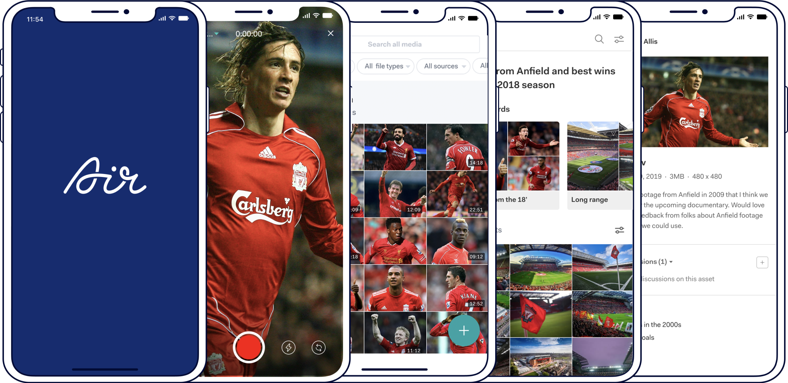
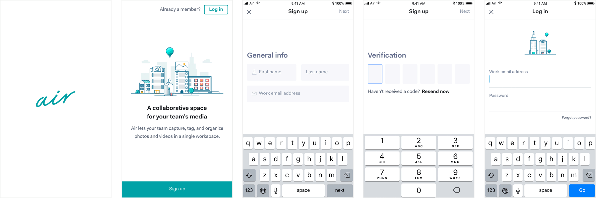
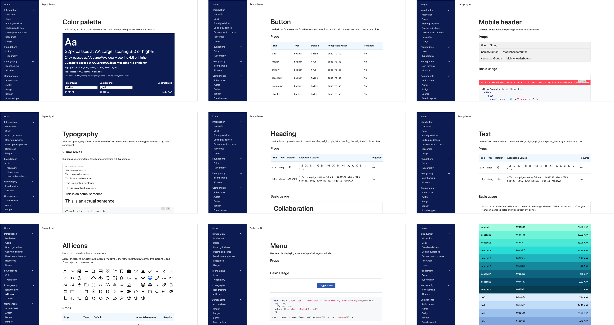

Amelio is a New York-based consultancy with 10+ years experience specializing in product design and design systems. We work closely with developers to help shape and scale component libraries for maximum reusability, working with clients like WeWork, Barnes & Noble, Air, Zocdoc, Slice, and more.
How we help
Scoping and planning
We love working with busy design teams who don't often have bandwidth to plan a design system. We create and prioritize milestones to help reach your goals and prevent design debt.
Consulting
For over a decade we've embedded with successful companies to audit their design assets and either optimize their existing system or advise on building powerful systems from scratch.
Designing
Years of product design and front-end work give our consultants greater insight into the benefits of a design system, helping us easily embed with your team and solve difficult problems in parallel.
Facilitating communication
Designers and developers don't always work in sync and the handoff can be bumpy. We love smoothing out the wrinkles and helping make yours a process that works better for everyone.
Writing documentation
As your library grows, defining components and writing guidelines becomes crucial. We love drafting docs for your design system to reduce ambiguity and onboard new contributors.
Testing and training
We prioritize regular check-ins, interviews, audits, and fun exercises with teams to keep them engaged as well as doing workshops on using the system with tools like Figma and Storybook.
Recent work

Air
A new generation of digital asset management tools for enterprise teams.
Air Labs was founded in 2017 by 2 Stanford grads with a track record of successful projects focused around streaming video. Early iterations of the platform focused on consumer experiences and limitless video storage, but the focus shifted to team collaboration around both video and photos.
I came aboard as first hire in March 2017 and immediately began a discovery process with the founders to figure out messaging and how we wanted to position the product. For months, we researched, sketched, and wrote before beginning to mock up what a more robust digital asset management app could look like, starting with onboarding and authentication.

Authentication screens, Air for iOS
As more React devs came on board, we collaborated to build a custom camera, asset galleries, and collections that used in-house transcoders, plus additional UIs for adding tags, description, and other metadata.
As we transitioned to an enterprise self-service model and picked up more users, we built out the web experience which included customized Boards for presentation, dashboards, and image recognition. With enterprise came the idea of team workspaces with membership management and granular permissions.
Login, Sign upAsset gallery, dashboard
As designs matured, our design system became more codified and I focused on issues like process, vocabulary, and communication with dev teams so that the system could facilitate handoff more easily.
Partial pattern library in Figma
We also used Storybook to define everything from brand guidelines to writing voice, SVG icons, and common UI components with the goal of syncing Figma with Storybook and Github for more seamless deployment.

Excerpts from Zephyr design system
“Darren is one of the most thoughtful designers I know. He thinks in terms of reusable components, always finding ways to build consistency and efficiency into his designs and design system. I can't recommend him strongly enough.”